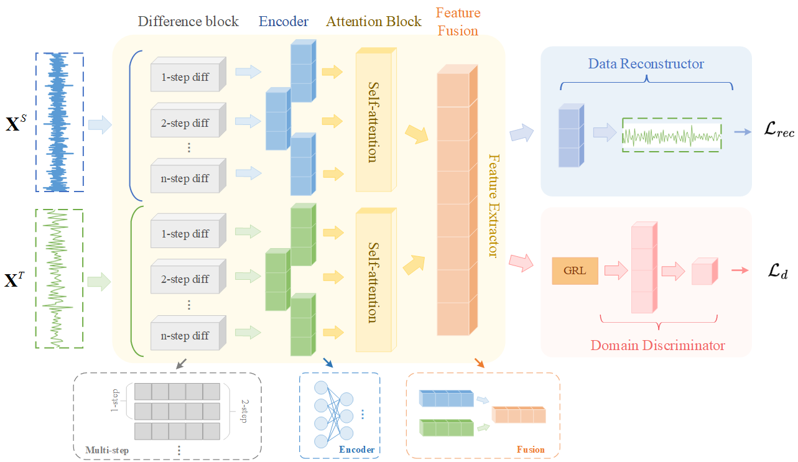
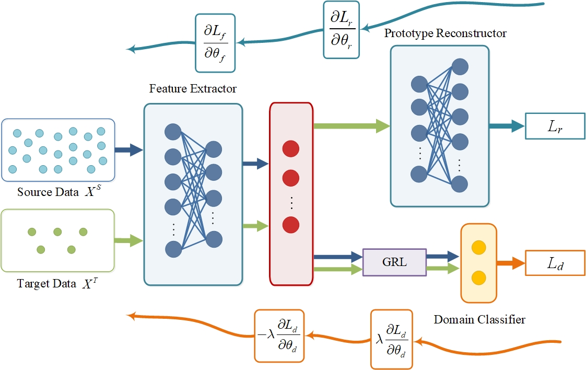
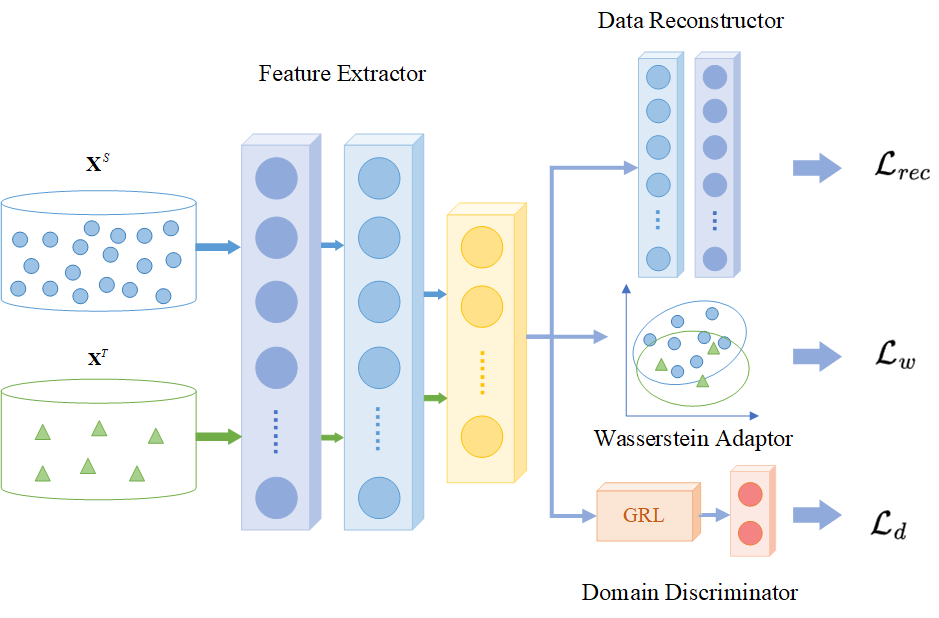

|
Ruiyi Fang Hello! This is Ruiyi (Raelyn)! I am a third-year master student at Central South University, advised by Professor Kai Wang. Previously, I received B.E. in Automation from Chang'an University in 2022. I had two exchange experiences at Kyoto University (2023) and Universiti Teknologi MARA (2020). My research interests lie in AI for robotics, deep learning, and transfer learning. Most of my research focus on the applications of deep learning, particularly in the few-sample scenarios. Please feel free to contact me with email. |

|
News |
Sep'24 |
This page last updated on Sep. 20th. |
Research |
|

|
Multi-step Difference-driven Domain Adversarial Network for Few-sample Fault Detection in Dynamic Industrial Systems
Ruiyi Fang, Kai Wang*, Xiaofeng Yuan, Yalin Wang, Chunhua Yang. Knowledge-Based Systems (KBS), Under review, 2024 In this study, we introduce a dynamic domain adversarial network (DDAN) for dynamic few-sample fault detection in industry. To tackle the dynamic characteristic in industrial data, a special multi-step difference module incorporating the self-attention mechanism is designed. Moreover, considering the few-sample problem (or cold-start problem), the DDAN is trained in an adversarial framework to transfer the domain-invariant features. |
|

|
Unsupervised Domain Adversarial Network for Few-sample Fault Detection in Industrial Processes
Ruiyi Fang, Kai Wang*, Jing Li, Xiaofeng Yuan, Yalin Wang. Advanced Engineering Informatics (AEI), 2024 [pdf] In this work, we introduce an adversarial-based unsupervised network for fault detection in few-sample scenarios. Due to the significant disparity in data quantity between the target domain and the source domain, the adversarial training process inevitably encounters an imbalance problem. To address this issue, we propose a domain imbalance aware margin (DIAM) loss to rebalance the domain margin between the two domains. |
|

|
Wasserstein Distance Based Domain Adversarial Autoencoder for Industrial Few-sample Fault Detection
Ruiyi Fang, Kai Wang*, Xiaofeng Yuan, Yalin Wang, Chunhua Yang. Asian Control Conference (ASCC), Jul. 2024 (Oral) We propose a method called WDAA, which utilizes an adversarial framework to transfer knowledge from a data-rich source domain to a data-poor target domain. To further enhance the domain adaptation performance, we develop a Wasserstein adaptor. The model was validated using data from an industrial process, the Continuous Stirred-Tank Reactor (CSTR). |
Education |
|
|
Sep '22 - Jun '25 Awards:
|
|
Sep '18 - Jun '22 Awards:
|
|
This template is a modification to Jon Barron's website. Find the source code to my version here. Feel free to clone it for your own use while attributing the original author Jon Barron. |